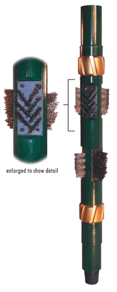

| The
DSC "V" Brushing Tool in uniquely designed to eliminate crude oil file,
drilling mud wallcake, paraffins, cement residue and other difficult
soils. |
|
 |
|
 |
- Innovative "V" brush design simultaneously promotes self cleaning
by elimination mud solids build up on the brush bristles while stopping
surface contamination from becoming a problem source
- Brushes withstand tough downhole cleaning demands utilizing strong,
non-moving parts secured directly to the toll body for the toughest
cleaning challenges
- Rotating stabilizer sleeves especially designed to reduce
torque and insure constant contact with the casing walls resulting
in a uniformly clean surface
- The most advanced downhole mechanical cleaning technology designed
to penetrate inaccessible areas and leave a clean, residue-free
surface
|
 |
|
- Versatile
brush materials: Stainless Steel for harsh environments and Nylon,
Bronze or Polypropylene for specialized surface cleaning applications
- Works in
combination with as additional DSC "V" Brushing Tool for maximum
surface cleaning
- Can be run
in combination with the DSC Scraper Tool
|